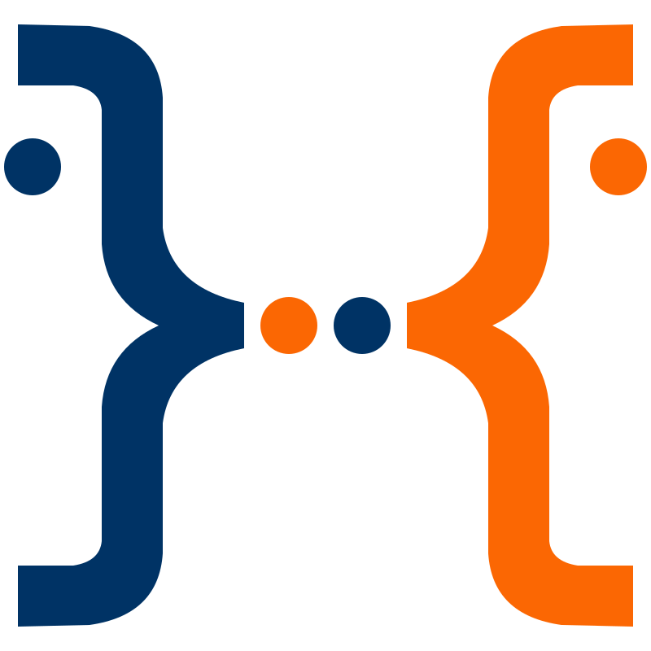

Discover us
Maximum effectiveness in production of high quality software for our customers with the best mix of
technology, methodology and engineering.
The company value is in the people: who works in Skillbill is
prepared, passionate and pragmatic: in short "Skill matters".
Skillbill's recruitment is tough. New Junior entries receive intense training. We do a constant evaluation of the people's skills trying to enhance them project by project.
We have maximum transparency in internal and external communications helping to create cohesion.
With our skilled and productive human capital we are able to establish long-term customer relationships based on trust.
Our expert consultants can integrate quickly within the customer's team sharing their targets and their challenges. They embrace the Agile approach, mastering SCRUM, and drive the customer throughout the project phases of design, development, testing, deployment and support. For Skillbill it’s important to accomplish the job fulfilling the deadlines agreed with the customer.
Skillbill can make the difference when a robust software development partner is needed. No matter what your preferred language or target O.S. is, we operate when the level of complexity is high. If you have a technical challenge, you are definitely in the right place. Our customer is generally a large company (also a multinational company) or a medium-large company.